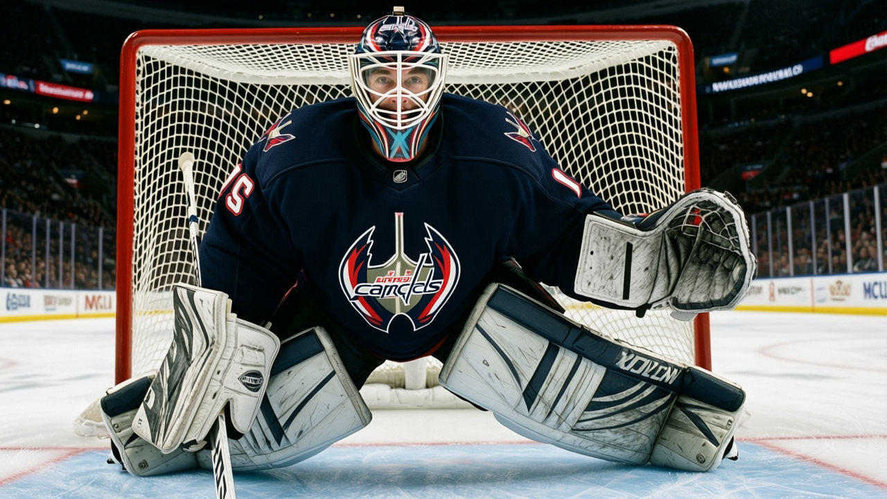

Numbers Game: Washington is 15-9 on the road, tied with Colorado for the league lead, and has played through 188 lost days
The Capitals carry 5 men on the shelf and Olaf Kolzig has started 40 of 43, yet nobody in the Southeast division has caught up to them
 Ray CallumSenior correspondent · Home Ice Network
Ray CallumSenior correspondent · Home Ice Network
 Washington Capitals is 15-9 on the road and 10-9 at home, 15 road wins that tie
Washington Capitals is 15-9 on the road and 10-9 at home, 15 road wins that tie  Colorado Avalanche for the most in the league. The Capitals sit at 55 points, 6 behind
Colorado Avalanche for the most in the league. The Capitals sit at 55 points, 6 behind  Tampa Bay Lightning in the Southeast and tied for second with
Tampa Bay Lightning in the Southeast and tied for second with  Carolina Hurricanes.
Carolina Hurricanes.
They have done it with 5 men unavailable and 26 injury spells costing 188 days since October. That places Washington 3rd in days lost this season, behind  Pittsburgh Penguins (329) and Tampa Bay Lightning (302). Only 2 clubs with fewer lost days have more points.
Pittsburgh Penguins (329) and Tampa Bay Lightning (302). Only 2 clubs with fewer lost days have more points.
 Olaf Kolzig93 has started 40 of 43 games, a 93% share that matches
Olaf Kolzig93 has started 40 of 43 games, a 93% share that matches  Byron Dafoe82 in
Byron Dafoe82 in  Atlanta Thrashers for the heaviest goaltending load in the league. The backup, Maxime Ouellet82, has 7 starts. The third man, Josh Harding80, has 3.
Atlanta Thrashers for the heaviest goaltending load in the league. The backup, Maxime Ouellet82, has 7 starts. The third man, Josh Harding80, has 3.
Monday's 2-0 win over  Florida Panthers was the 5th straight for Washington. They are 23-13-5, up from 18-13-5 before the streak began.
Florida Panthers was the 5th straight for Washington. They are 23-13-5, up from 18-13-5 before the streak began.
The road record is not a fluke
Washington's 15-9 road mark sits alongside Colorado Avalanche's 15-6 at the top of the league. The 10-9 at home tracks a building the club has not made work.
The goals-against figure (148 in 43 games) puts them 5th in the Eastern Conference, behind  Toronto Maple Leafs (119),
Toronto Maple Leafs (119),  New Jersey Devils (132), Florida Panthers (140), and Tampa Bay Lightning (141). The wins are coming tight and the structure is holding.
New Jersey Devils (132), Florida Panthers (140), and Tampa Bay Lightning (141). The wins are coming tight and the structure is holding.
Kolzig at 40 starts in 43 is a January number that becomes a February problem if the rest of the club cannot step up. The 5 unavailable men will begin returning in the second half of January:  Rod Brind'Amour83 on 2005-01-22,
Rod Brind'Amour83 on 2005-01-22,  Radim Vrbata79 on 2005-02-10, and
Radim Vrbata79 on 2005-02-10, and  Sean Hill79 on 2005-01-16. Washington has to hold a 6-point division gap with Kolzig already at 40 starts.
Sean Hill79 on 2005-01-16. Washington has to hold a 6-point division gap with Kolzig already at 40 starts.